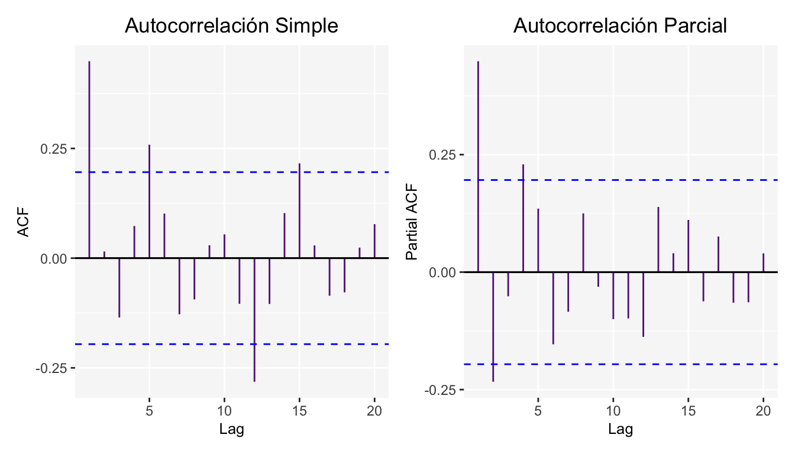
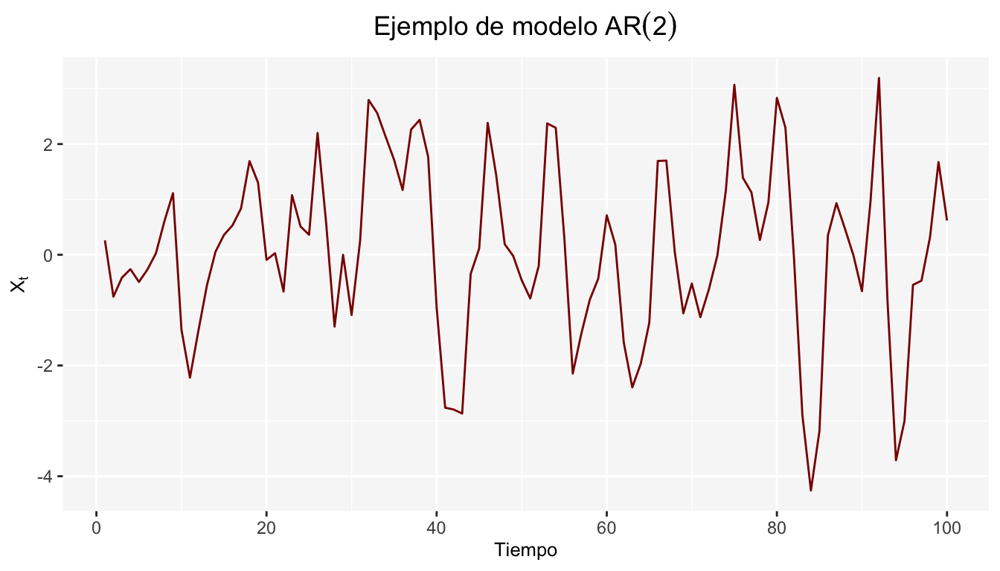
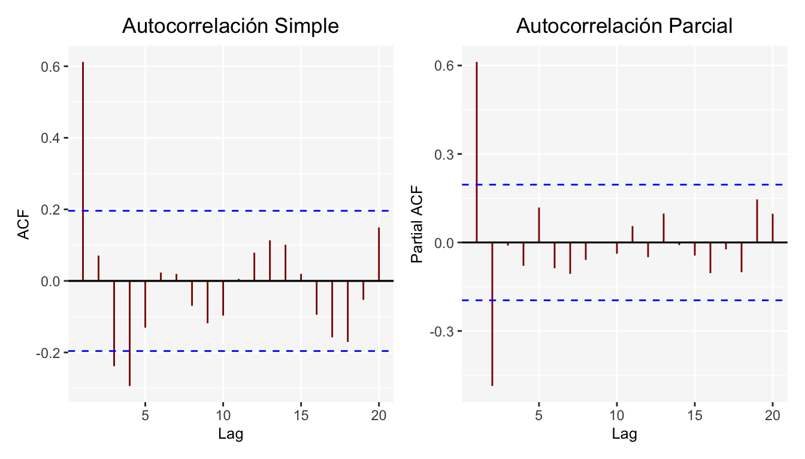
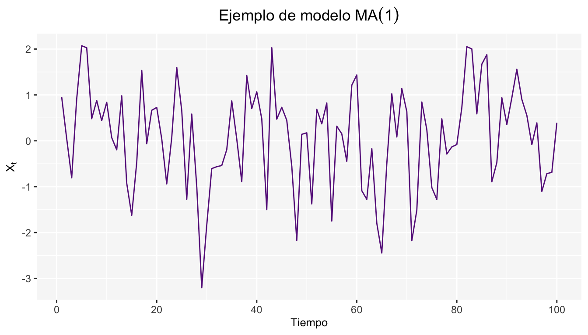

Capítulo 6 \(AR(p)\): Proceso Autoregresivo
Los modelos autoregresivos se basan en la idea de que el valor actual de la serie \(X_t\), puede explicarse en función de \(p\) valores pasados \(X_{t-1},X_{t-2},...X_{t-p}\), donde \(p\) determina el número de rezagos necesarios para pronosticar un valor actual.
El modelo autoregresivo de orden \(p\) está dado por:
\[ X_t=\phi_0+\phi_1X_{t-1}+\phi_2X_{t-2}+...+\phi_pX_{t-p}+\epsilon_t \]
Expresado en términos del operador de retardos
\[ X_t-\phi_0-\phi_1X_{t-1}-\phi_2X_{t-2}-...-\phi_pX_{t-p}=\epsilon_t \\-\phi_0+(1-\phi_1B-\phi_2B^2-\phi_3B^3-...-\phi_pB^p)X_t=\epsilon_t \\\phi_p(B)X_t=\epsilon_t+\phi_0 \]
donde \(\epsilon_t\) es un proceso de ruido blanco y \(\phi_0,\phi_1,\phi_2,...\phi_p\) son parámetros del modelo.
6.1 Proceso Autoregresivo de orden 1: \(AR(1)\)
En los procesos \(AR(1)\) la variable \(X_t\) está determinada únicamente por el valor pasado, esto es \(X_{t-1}\).
\[ X_t=\phi_0+\phi_1X_{t-1}+\epsilon_t \]
Donde \(\epsilon_t\) es un ruido blanco con media \(0\) y con varianza \(\sigma^2\) e independiente de \(X_t\). Para verificar que sea estacionario (débilmente) se debe verificar la estacionalidad en media y covarianza.
6.1.1 Estacionario en Media
\[ \begin{split} \mathbb{E}(X_t) &= \mathbb{E}(\phi_0+\phi_1X_{t-1}+ \epsilon_t)= \phi_0 + \phi_1 \mathbb{E}(X_{t-1}) + \mathbb{E}(\epsilon_t)\\ & = \phi_0 + \phi_1\mathbb{E}(X_{t-1})\\ \end{split} \] Para que \(X_t\) sea estacionario en la media se debe cumplir que \(E(X_t)=E(X_{t-1})\)
Entonces:
\[ (1-\phi_1)\mathbb{E}(X_t)=\phi_0 \ \ \Longrightarrow \ \ E(X_t)= \frac {\phi_0}{1-\phi_1} \] por lo tanto \(E(X_t)=\frac {\phi_0}{1-\phi_1}\) y \(\phi_1\neq1\).
6.1.2 Estacionario en Covarianza
Para que \(AR(1)\) sea estacionario, la varianza tiene que ser constante y finita en el tiempo.
\[ \begin{split} \gamma_0 &= Var(X_t)=\mathbb{E} \left[(X_t -\mathbb{E}(X_t))^{2}\right]\\ &= \mathbb{E}\left[(\phi_0+\phi_1X_{t-1}+\epsilon_t-\phi_0-\phi_1\mathbb{E}(X_{t-1}))^2\right]\\ & = \mathbb{E}\left[(\phi_1(X_{t-1}-\mathbb{E}(X_{t-1}))+\epsilon_t)^2\right]\\ & = \mathbb{E}\left[\phi_1(X_{t-1}-\mathbb{E}(X_{t-1}))^2+2\phi_1(X_{t-1}-\mathbb{E}(X_{t-1}))\epsilon_t+\epsilon_t^2\right]\\ & = \phi^2 \mathbb{E}\left[(X_{t-1}-\mathbb{E}(X_{t-1}))^2\right] +2\phi_1\mathbb{E}\left[X_{t-1}-\mathbb{E}(X_{t-1})\right]\mathbb{E}(\epsilon_t)+\mathbb{E}[\epsilon_t^2]\\ &= \phi_1^2 Var(X_{t-1})+ \sigma^2 \end{split} \]
Buscamos que \(X_t\) sea estacionario en la varianza, por lo que bajo el supuesto de proceso estacionario:
\[ \begin{split} &\Longrightarrow Var(X_t)=Var(X_{t-1})\\ &\Longrightarrow Var(X_t)= \gamma_0= \phi_1^2 Var(X_{t-1})+\sigma^2\\ &\Longrightarrow \gamma_0=\phi_1^2 \gamma_0+ \sigma^2 \Longrightarrow (1-\phi_1^2) \gamma_0=\sigma^2\\ &\Longrightarrow \gamma_0 = \frac{\sigma^2}{1-\phi_1^2} \end{split} \]
Véase que para que sea estacionario, con varianza constante y finita es necesario que \(| \phi_1|< 1\). En resumen
\[Var(X_t)= \gamma_0 = \frac{\sigma^2}{1-\phi^2}\]
Respecto a la covarianza \(Cov(X_t,X_{t-k})\) para \(K=1,...\), se tiene lo siguiente
\[ \begin{split} Cov(X_t,X_{t-k})&=\gamma_k = \mathbb{E}\left[(X_t-\mathbb{E}(X_t))(X_{t-k}-\mathbb{E}(X_{t-k}))\right]\\ & = \mathbb{E}\left[(\phi_1(X_{t-1}-\mathbb{E}(X_{t-1}))+\epsilon_t)(X_{t-k}-\mathbb{E}(X_{t-k}))\right]\\ & = \mathbb{E}\left[\phi_1(X_{t-1}-\mathbb{E}(X_{t-1}))(X_{t-k}-\mathbb{E}(X_{t-k}))\right] + \mathbb{E}\left[\epsilon_t(X_{t-k}-\mathbb{E}(X_{t-k}))\right]\\ & = \phi_1\mathbb{E}\left[(X_{t-1}-\mathbb{E}(X_{t-1}))(X_{t-k}-\mathbb{E}(X_{t-k}))\right] = \phi_1\gamma_{k-1} \end{split} \]
\[ \begin{array}{lc} \mbox{Entonces: } & \begin{array}{c} \gamma_1= \gamma_0 \phi\\ \gamma_2 =\gamma_1\phi\\ \vdots \end{array} \end{array} \]
\(\therefore AR(1)\) es estacionario en covarianza si \(|\phi_1|<1\) y la función de covarianza será:
\[ \gamma_k= \left\{ \begin{aligned} \frac{\sigma^2}{1-\phi_1^2} \ \ \ \ k=0\\ \phi_1 \gamma_{k-1} \ \ \ \ k>0 \end{aligned} \right. \]
Los coeficientes de correlación quedan determinados por la siguiente expresión:
\[ \rho_k = \frac{Cov(X_t, X_{t-k})}{\sqrt{Var(X_t)}\sqrt{Var(X_{t-k})}} = \frac{\gamma_k}{\gamma_0} = \frac{\phi_1\gamma_{k-1}}{\gamma_0} = \phi_1\frac{\gamma_{k-1}}{\gamma_0} = \phi_1\rho_{k-1} \]
Por lo que la función de autocorrelación para \(AR(1)\) es :
\[ \rho_k= \left\{ \begin{aligned} 1 \ \ \ \ \ \ k=0\\ \phi \rho_{k-1} \ \ \ \ k\geq 1 \end{aligned} \right. = \left\{ \begin{array}{lr} 1 & k=0\\ \phi_1\frac{\gamma_{k-1}}{\gamma_o} & k\geq 1 \end{array} \right. \]
Observemos que para el modelo \(AR(1)\), la función de autocorrelación es exponencial
\[ \begin{split} \rho_0 &= 1\\ \rho_1&=\phi_1\rho_o=\phi_1\\ \rho_2&=\phi_1\rho_1=\phi_1^2\\ &\ \ \vdots\\ \rho_k&=\phi_1^k \end{split} \implies \rho_k= \left\{ \begin{array}{lr} 1 & k=0\\ \phi_1^2 & k\geq 1 \end{array} \right. \]
- Caso particular: \(AR(1): X_t = \phi_1X_{t-1}+\epsilon_t\), es decir que \(\phi_0 = 0\). Para este caso se tiene \(\mathbb{E}(X_t) = \phi_1\mathbb{E}(X_{t-1})\implies(1-\phi_1)\mathbb{E}(X_t) = 0\implies\mathbb{E}(X_t) = \frac{0}{(1-\phi_1)} = 0\).
A continuación se muestran los resultados para un modelo \(AR(1)\) de la siguiente forma \(X_t=0.35X_{t-1}+\epsilon_t\)

Además de las gráficas de Autocorrelación simple y parcial.

6.2 Proceso Autoregresivo de orden 2: \(AR(2)\)
En los procesos \(AR(2)\) la variable \(X_t\) está determinada por el valor pasado y el anterior a este.
\[ X_t=\phi_0 + \phi_1 X_{t-1}+\phi_2 X_{t-2}+\epsilon_t \]
Donde \(\epsilon_t\) es un ruido blanco (media cero y varianza \(\sigma^2\)). Asumiendo estacionariedad débil, se tiene que la media y la varianza del proceso serán las siguientes.
6.2.1 Estacionario en Media
Bajo el supuesto de estacionalidad:
\[ \begin{split} & \mathbb{E}(X_t) = \mathbb{E}(X_{t-1}) = \mathbb{E}(X_{t-2})\\ \implies &(1-\phi_1-\phi_2)\mathbb{E}(X_t) = \phi_0\\ \implies &\mathbb{E}(X_t) = \frac{\phi_0}{1-\phi_1-\phi_2} \end{split} \]
\(\therefore\) Para que sea estacionario, se tiene que cumplir que \(1-\phi_1-\phi_2 \neq 0\).
6.2.2 Estacionario en Covarianza
\[ \begin{split} \gamma_0 &= \mathbb{E}\left[(X_t-\mathbb{E}(X_t))^2\right]\\ & = \mathbb{E}\left[(\phi_0+\phi_1 X_{t-1}+\phi_2 X_{t-2}+\epsilon_t-\phi_0 -\phi_1\mathbb{E}(X_{t-1})-\phi_2 \mathbb{E}(X_{t-2}))^2\right]\\ & = \mathbb{E}\left[(\phi_1(X_{t-1}-\mathbb{E}(X_{t-1}))+\phi_2(X_{t-2}-\mathbb{E}(X_{t-2}))+\epsilon_0)^2\right]\\ & = \mathbb{E}[\phi_1^2(X_{t-1}-\mathbb{E}(X_{t-1}))^2 + 2\phi_1\phi_2(X_{t-1}-\mathbb{E}(X_{t-1}))(X_{t-2}-\mathbb{E}(X_{t-2}))\\ & \ \ \ \ \ \ \ \ + \phi_2^2(X_{t-2}-\mathbb{E}(X_{t-2}))^2+\epsilon_0^2+\cdots]\\ & = \phi_1^2\gamma_0+2\phi_1\phi_2\gamma_1+\phi_2^2\gamma_0+\sigma^2 \end{split} \]
Pero, véase lo siguiente
\[ \begin{split} \gamma_1 &= \mathbb{E}\left[(X_{t}-\mathbb{E}(X_{t}))(X_{t-1}-\mathbb{E}(X_{t-1}))\right]\\ &=\mathbb{E}\left[(\phi_1(X_{t-1}-\mathbb{E}(X_{t-1}))+\phi_2(X_{t-2}-\mathbb{E}(X_{t-2}))+\epsilon_t)(X_{t-1}-\mathbb{E}(X_{t-1}))\right]\\ &= \mathbb{E}\left[\phi_1(X_{t-1}-\mathbb{E}(X_{t-2}))^2+\phi_2(X_{t-1}-\mathbb{E}(X_{t-1}))(X_{t-2}-\mathbb{E}(X_{t-2}))+\epsilon_t(X_{t-1}-\mathbb{E}(X_{t-1}))\right]\\ &=\phi_1\gamma_0+\phi_2\gamma_1\\ \implies &\gamma_1 = \frac{\phi_1}{(1-\phi_2)}\gamma_0 = \phi_1\gamma_0+\phi_2\gamma_1 \end{split} \]
En general la autocovarianza de orden \(k\), para \(k>1\) será:
\[ \begin{split} \gamma_k &= \mathbb{E}\left[(X_{t}-\mathbb{E}(X_{t})(X_{t-k}-\mathbb{E}(X_{t-k})\right]\\ & = \mathbb{E}\left[(\phi_1(X_{t-1}-\mathbb{E}(X_{t-1}))+\phi_2(X_{t-2}-\mathbb{E}(X_{t-2}))+\epsilon_t)(X_{t-k}-\mathbb{E}(X_{t-k})\right]\\ &=\mathbb{E}\left\{[\phi_1(X_{t-1}-\mathbb{E}(X_{t-1}))][(X_{t-k}-\mathbb{E}(X_{t-k}))]\right\} + \mathbb{E}\left\{[\phi_2(X_{t-2}-\mathbb{E}(X_{t-2}))][(X_{t-k}-\mathbb{E}(X_{t-k}))]\right\} \\ & = \phi_1\gamma_{k-1}+\phi_2\gamma_{k-2} \end{split} \]
Entonces la función de autocovarianza de un modelo \(AR(2)\) es la siguiente
\[ \gamma_k = \left\{ \begin{array}{ccc} \gamma_0 & \mbox{ si }& k=0\\ \gamma_1 & \mbox{ si }& k=1\\ \phi_1\gamma_{k-1}+\phi_2\gamma_{k-2}& \mbox{si} & k>1\\ \end{array} \right. \] Y la correspondiente función de autocorrelación de un modelo \(AR(2)\) es:
\[ \rho_k = \left\{ \begin{array}{ccc} 1 & \mbox{ si }& k=0\\ \frac{\gamma_1}{\gamma_0} = \frac{\phi_1}{1-\phi_2} & \mbox{ si }& k=1\\ \phi_1\rho_{k-1}+\phi_2\rho_{k-2}& \mbox{si}& k>1\\ \end{array} \right. \]
A continuación se da un ejemplo de un modelo \(AR(2)\) de la siguiente forma \(X_t=0.8X_{t-1}-0.4X_{t-2}+\epsilon_t\)

Y al igual que para el ejemplo del modelo \(AR(1)\), se agregan las gráficas de autocorrelación simple y parcial.

Algo interesante de tener los procesos en términos de operadores de retardos es que podemos obtener las condiciones de estacionariedad en \(AR\) por las raíces del polinomio que se deriva de esta notación:
\[ \begin{split} AR(1):& X_t = \phi_1 X_{t-1}+\epsilon_t\\ \implies & (1-\phi_1 B)X_t = \epsilon_t\\ \implies &B = \frac{1}{\phi_1}\implies |\phi_1|<1 \end{split} \] \[ \begin{split} AR(2):& X_t = \phi_1X_{t-1}+\phi_2X_{t-2}+\epsilon_t\\ \implies & (1-\phi_1B-\phi_2B^2)X_t = \epsilon_t \end{split} \]
Por lo que las raíces del polinomio \((1-\phi_1B-\phi_2B^2)\) serán \(B^1, B^2 = \frac{\theta_1\pm\sqrt{\theta_1^2+4\theta_2}}{-2\theta_2}\).
Y gracias a todo esto, podemos interpretar que para que los procesos sean estacionarios, se solicita que las raíces estén fuera del círculo unitario, es decir: \(|B^1|>1\) y \(|B^2|>1\).